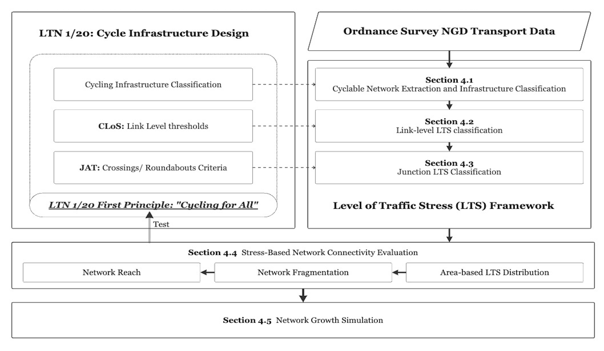

Directed Level of Traffic Stress Classification for Cycling Networks
A standards-based network evaluation of the West Midlands, grounded in LTN 1/20
This dissertation develops a directed Level of Traffic Stress (LTS) classification derived from LTN 1/20 design criteria, operationalises it on Ordnance Survey National Geographic Database (OS NGD) Transport data, and applies it to evaluate network-level cycling conditions in the West Midlands. Conducted in collaboration with Transport for West Midlands.
Introduction
Cycling has been widely recognised as a sustainable mode of urban transport, offering co-benefits across public health, air quality, carbon reduction, and potential congestion alleviation (WHO, 2022; European Union, 2024; IPCC, 2023). Central to realising these benefits is the provision of high-quality, connected cycling infrastructure, which is consistently associated with higher cycling participation (Hull and O’Holleran, 2014; Pistoll and Goodman, 2014; Buehler and Dill, 2016; Mölenberg et al., 2019). Reflecting this evidence, the UK Department for Transport published Local Transport Note 1/20, Cycle infrastructure design (LTN 1/20), in July 2020, establishing the most comprehensive national standards for cycling infrastructure design and assessment applicable to England and Northern Ireland to date (Department for Transport, 2020a). LTN 1/20’s evaluation tools, the Cycling Level of Service (CLoS) and the Junction Assessment Tool (JAT), give practitioners a rigorous means of appraising individual schemes, assessing road segments and junctions against detailed design criteria through structured manual audit (Department for Transport, 2020a). What they do not address is the network-level question: whether compliant segments cohere into a connected whole. Network-level cycling connectivity is a property of whole journeys rather than individual schemes: a single high-stress link or junction can render an otherwise compliant route unusable for the very cyclists the guidance seeks to serve. There is therefore a need for a data-driven, network-level methodology capable of evaluating cycling infrastructure quality across a city or region using standard open and mapping agency data.
The Level of Traffic Stress (LTS) framework offers such a network-level approach, classifying road segments and junctions by the population group willing to tolerate their traffic conditions: from LTS 1, conditions suitable for children and old people, through LTS 2, tolerable to most adults, to LTS 3 and 4, which only progressively smaller and more confident minorities will accept (Mekuria, Furth and Nixon, 2012). Because each stress level maps onto a population group, the classification links infrastructure quality directly to mode shift potential: expanding the network usable at lower stress thresholds is what brings the broader population into cycling. LTS-based network analysis has since become the dominant approach in cycling connectivity and equity research (Louro et al., 2026). Its non-compensatory logic, under which a single high-stress attribute determines classification, aligns naturally with how traffic conditions deter potential cyclists. Yet most published LTS criteria were calibrated to North American road design conventions, and applications to British cities have relied on simplified adaptations of these criteria rather than national design guidance (Cervero, Denman and Jin, 2019; Jeong and Smith, 2025). No LTS classification grounded in UK design standards has been developed systematically.
The data foundations for such a classification have only recently emerged. The Ordnance Survey National Geographic Database (OS NGD) Transport Theme provides authoritative network geometry with attributes directly relevant to stress classification, including carriageway width, legal access designation, and probe-derived vehicle speeds. Its Cycle Lane feature collection, which achieved full national coverage in March 2026, records cycle lane width, direction of cycling travel and infrastructure type with facility descriptions aligned to LTN 1/20 terminology (Ordnance Survey, 2026d). The simultaneous availability of a statutory design standard and a nationally consistent authoritative dataset creates the conditions under which cycling networks across England can be classified and evaluated against a single national benchmark.

This dissertation develops a directed Level of Traffic Stress classification derived from LTN 1/20 design criteria, operationalises it on OS NGD Transport data, and applies it to evaluate network-level cycling conditions in the West Midlands. The region presents a revealing setting for such an evaluation. Among English regions it combines the highest share of private motorised trips with a cycling mode share of approximately 0.9% (West Midlands Combined Authority, 2024), yet its transport authority has committed to delivering a 500-mile network of low-stress cycle routes (West Midlands Combined Authority, 2020). The distance between this ambition and current network conditions is precisely what a standards-based classification is designed to measure. The study, conducted in collaboration with Transport for West Midlands, makes contributions to methodology and data: the first LTS framework calibrated to English design standards systematically, incorporating directed junction assessment and roundabout-specific criteria; and the first independent assessment of the OS NGD Cycle Lane dataset. The classified network is then used to evaluate connectivity against LTN 1/20’s own principle of “cycling for all”, proceeding from infrastructure supply to the journeys that infrastructure enables: the extent and spatial distribution of low-stress provision, the degree to which low-stress links cohere into connected components rather than isolated fragments, the reach available to residents from where they live, and the proportion of everyday travel demand, for commuting and for access to schools, that the network can carry at each stress threshold. A network growth simulation then examines how the sequence in which high-stress links are upgraded shapes connectivity outcomes, comparing selection strategies that exploit network structure against uninformed investment. Together these analyses illustrate the range of strategic questions that a nationally consistent, standards-based classification can support.
Explore the analysis
Cyclable Network Extraction
Directed cyclable network construction from OS NGD Transport data, directed edge expansion, cycle lane joining, and facility classification into LTN 1/20 aligned categories.
Minor Road Traffic Volume Estimation
Replication of the Morley and Gulliver (2016) AADT estimation pipeline using pgRouting on England OSM data.
Traffic Volume Projection
Projection of estimated AADT onto the OS NGD network for downstream LTS classification.
Link Level LTS Classification
Segment-level LTS assignment using non-compensatory worst-indicator-wins logic aligned to LTN 1/20 CLoS criteria.
Junction LTS Classification
Junction stress enhancement via bearing-based conflict detection, crossing design suitability, and JAT-derived roundabout criteria.
LTS Distribution and Fragmentation
Area-based LTS distribution, LSOA-level network density, connected component analysis, and LCC fragmentation across stress thresholds.
Reach Analysis
Directed Dijkstra network reach from LSOA centroids within an 8 km threshold across LTS-constrained subgraphs.
OD Pair Connectivity
School accessibility and Census 2011 MSOA commuting connectivity with tolerance-based detour analysis.
Edge Betweenness Centrality
Parallelised Brandes algorithm via NetworKit for topological demand proxy computation on the full undirected network.
Network Growth Simulation
Forward growth simulation comparing Random, Connectivity, and Betweenness Centrality upgrade strategies across LCC share and demand-weighted connectivity.
LTN 1/20: Web Assessment Tool
An interactive, map-based interface for exploring Cycling Level of Service (CLoS) scores across the West Midlands road network. The tool scores 183,923 individual road links against LTN 1/20 criteria using OS NGD, DfT AADF, and OpenStreetMap data, providing a consistent network-wide baseline without requiring bespoke field survey. Thirteen of 25 CLoS criteria are scored (seven directly, four via data-driven proxies, two partially through a Junction Assessment Tool), with scores computed separately for each direction of travel. The tool includes Dijkstra-based route planning with per-link CLoS breakdowns, reference layers for cycle parking and key destinations, and supports two practitioner workflows identified during stakeholder engagement: early-stage desktop screening of problem corridors and pre-screening ahead of formal Active Travel England Route Check audit.
This project was conducted in collaboration with Transport for West Midlands as part of an MRes dissertation at UCL’s Centre for Advanced Spatial Analysis.